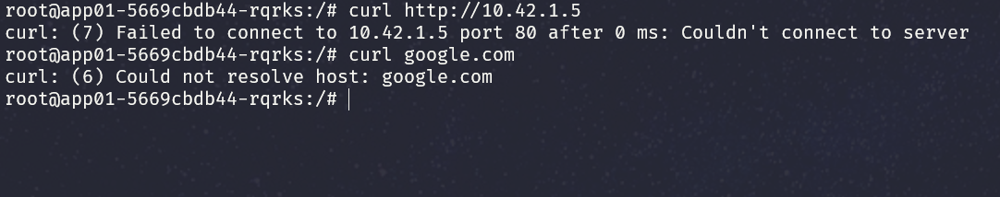

Kubernetes Network Policies
Por Isaias do Carmo
Introdução
Kubernetes possui várias camadas de comunicação e prover segurança através de todas essas camadas pode se tornar uma tarefa árdua. Um dos desafios é o estabelecimento de um ambiente de isolamento no qual clusters, pods e namespaces possam se comunicar entre si, aplicando o conceitos como zero trust e defesa em profundidade.
Este artigo explora a implementação de Network Policies no Kubernetes, concentrando-se nas melhores práticas através de cenários práticos.
Objetivos
- Entender os fundamento de Redes no Kubernetes
- Entender o conceito de Network policies
- Criar um cluster Kubernetes
- Implementar Network Policies
- Gerenciar Policies
Pré-requisitos:
- Ter Docker instalado na sua máquina
- ter o K3D instalado para criar seu cluster
- Ter o kubectl instalado
- Noções de Kubernetes
Criando seu Cluster Kubernetes
Vamos usar para este artigo o K3D para criar nosso cluster, um projeto mantido pela Rancher, que possibilita criar cluster Kubernetes com docker. Se preferir, use os provedores de cloud para criar seus cluster. AWS, Azure, GCP oferecem créditos para que você possa começar a usar seus serviços.
- https://aws.amazon.com/pt/free/
- https://azure.microsoft.com/pt-br/free/
- https://cloud.google.com/free
Para criar um cluster utilizando o k3d acesse o terminal de seu sistema operacional e digite:
k3d cluster create my-cluster
Valide as informações do seu cluster
o K3D oferece vários recursos para montar seu cluster local, como bind de portas, quantidades de nodes, gerenciamento de memória, etc. Visite a documentação para mais informações.
Agora que temos nosso cluster pronto, podemos seguir para a próxima etapa.
Fundamentos
Vamos passar um overview do modelo de rede no Kubernetes.
- Todo pod “ganha” seu próprio endereço IP em um cluster
- Por padrão, os pods enxergam e podem se comunicar com todos os outros Pods dentro de um cluster. Guarde essa informação!
- Containers dentro de um mesmo POD (não é uma boa prática, então evite isso OK?) compartilham o endereço IP do pod.
Vamos ver como isso funciona na prática:
Criando deployments
Vamos começar criando alguns deployments para aprofundar para validar essas premissas.
kubectl create deployment app01 --image=nginx:latest
kubectl create deployment app02 --image=httpd:latest
Validando os conceitos de rede
Vamos checar primeira premissa olhando o conteúdo de /etc/hosts:
kubectl exec -it <POD_NAME> -- cat /etc/hosts
Bem, agora vamos tentar chegar na aplicação do apache a partir do nginx:
kubectl exec -it app01-5669cbdb44-rqrks -- /bin/bash
Dessa forma, vemos na prática as premissas. A terceira parece um pouco óbvia, mas fique a vontade para testa-la. Instale fermentas de rede e brinque um pouco para ver na prática a comunicação de rede do kubernetes.
Será que essas regras valem para pods que estão em namespaces diferentes?
Problemas de Segurança
O k8s é muito útil em aplicações em arquitetura de “microserviços”. É um sistema de orquestração de contêineres perfeito para automatizar o gerenciamento, o dimensionamento e a implantação de aplicativos de “microsserviços”. No entanto nem todas as aplicações em um cluster precisam e deve se comunicar, correto?
É muito comum que organizações usem um mesmo cluster Kubernetes para implantar todas as suas diversas aplicações de negócios, todas se comunicando por default. Do contexto de segurança, isso é similar a uma rede inteira de uma empresa que se comunica, não tendo segregação e trazendo diversos problemas de segurança.
No k8s não é diferente, é importante pensar em segmentação de rede, aplicação de conceitos de zero trust e defesa em profundidade. Felizmente temos um poderoso recurso no K8S que nos auxilia no contexto de políticas e segregação de redes.
Network Policies
Network Policies são um conjunto de regras que definem como a comunicação entre pods dentro de um cluster Kubernetes é permitida ou negada. É um recurso poderoso que permite controlar o tráfego de rede que entra e sai dos pods. Basicamente, atuam como um firewall virtuais que definem que tráfego pode chegar as aplicações fornecendo um nível granular de controle sobre a comunicação de rede do seu aplicativo.
NetworkPolicies são definidos usando regras PolicyTypes, PodSelectors, Ingress e Egress:
- PolicyTypes: Determina se a política será aplicada para tráfego de Ingress (Entrada) ou Engress (saída), ou ambos.
- PodSelectors: Define o conjuto de pods que serão aplicados pela políticas. Use labels para espeficiar quais pods serão afetados pela política
- Ingress Rules: Define qual tráfego de rede de entrada tem permissão para chegar aos pods selecionados.
- Egress rules: Defiine qual tráfego de rede de saída é permitido nos pods selecionados.
Criando e aplicando Network Policies
É importante seguir uma prática recomendada de mercado e criar uma policy que nega todo o tráfego. Isso estabelece uma linha de base segura a partir da qual podemos permitir seletivamente o tráfego necessário
- Criamos um arquivo chamado
default-deny-all.yaml
apiVersion: networking.k8s.io/v1
kind: NetworkPolicy
metadata:
name: default-deny-all
spec:
podSelector: {}
policyTypes:
- Ingress
- Egress
Agora aplicamos essa policy:
kubectl apply -f default-deny-all.yaml
Entre na aplicação do nginx (app01) e use o curl para chegar ao google ou até mesmo ao apache (app02).

Verá que toda comunicação de entrada ou saída do pod é dropada.
Cenário
Vamos pensar no seguinte arquitetura de aplicação:
Remediações
Vamos pensar no seguinte fluxo de cominação entre as aplicações:
Para mitigar esses riscos, usamos network policies para isolar os pods. Usando uma abordagem apropriada podemos isolar o front-end, o back-end e o banco de dados de diminuído a superfície de ataque. Como resultado, se de alguma forma algum invasor obtiver acesso à camada frontend, não poderá acessar diretamente a camada do banco de dados. Isso parece mais organizado e trás um melhor controle do ponto de vista de segurança.
Vamos usar o Network Policies para validar isso na prática.
Criando as aplicações
Remova as politicas aplicadas anteriormente, vamos deixar o cluster default.
Crie um arquivo chamado script.sh e cole o código abaixo. Ele criará as aplicações nos seus namespaces. Vamos usar uma imagem simples do nginx e apenas modificar os nomes para fins de entendimento.
#!/bin/bash
# Lista de namespaces e seus respectivos labels
declare -A namespaces=( ["frontend"]="frontend" ["backend"]="backend" ["database"]="database" )
# Percorrer a lista de namespaces e criar/rotular
for ns in "${!namespaces[@]}"; do
echo "Criando namespace: $ns"
kubectl create ns $ns
echo "aplicando label nos namespace:"
kubectl label ns $ns role=${namespaces[$ns]}
# Verifica se o namespace é 'frontend' para setar mais uma réplica
if [ "$ns" = "frontend" ]; then
echo "Criando deployment para $ns com duas réplicas"
kubectl create deploy $ns -n $ns --image=nginx --replicas=2
else
echo "Criando deployment para $ns"
kubectl create deploy $ns -n $ns --image=nginx
fi
done
chmod +x scritp.sh
./scritp.sh
Aplicando Network Policies
Camada do frontend
Vamos começar criando uma política para negar todo o tráfego. Crie um arquivo default-deny-all-frontend.yaml e cole a política:
apiVersion: networking.k8s.io/v1
kind: NetworkPolicy
metadata:
name: default-deny-all-frontend
namespace: frontend
spec:
podSelector: {}
policyTypes:
- Ingress
- Egress
kubectl apply -f default-deny-all-frontend.yaml
Dessa forma a camada do frontend fica isolada dos outros namespaces no cluster. Experimente testar as comunicações agora.
Pela imagem, devemos agora permitir que o frontend consiga se comunicar com a camada do backend, com um tráfego da saída. Então, crie um arquivo chamado allow-egress-frontend-to-backend.yaml como a seguinte política:
apiVersion: networking.k8s.io/v1
kind: NetworkPolicy
metadata:
name: allow-egress-frontend-to-backend
namespace: frontend
spec:
podSelector:
matchLabels: {}
egress:
- to:
- podSelector:
matchLabels: {}
namespaceSelector:
matchLabels:
role: backend
kubectl apply -f allow-egress-frontend-to-backend.yaml
Teste com o curl a comunicação do frontend para o backend para validar se os serviços conseguem se comunicar.
Como negamos o trafego de entrada e saída, precisamos liberar para que o trafego da internet chegue ao serviço do frontend. Se você estiver usando um serviço do tipo Loadbalancer conseguirá testar isso na prática.
Crie um yaml chamado allow-ingress-internet-to-frontend.yaml com a seguinte política:
apiVersion: networking.k8s.io/v1
kind: NetworkPolicy
metadata:
name: allow-ingress-internet-to-frontend
namespace: frontend
spec:
podSelector:
matchLabels: {}
ingress:
- from:
- ipBlock:
cidr: 0.0.0.0/0
kubectl apply -f allow-ingress-internet-to-frontend.yaml
Aqui temos um problema clássico de políticas. Essa política está permitindo todo o trafego de entrada para o frontend, sobrescrevendo outras politicas. Dessa forma, se tentar chegar no frontend a partir do database, verá que é possível. Vamos corrigir isso usando o parâmetro execpt. Além disso vamos restringir também ao tráfego HTTP. Modifique o arquivo allow-ingress-internet-to-frontend.yaml para o seguinte:
apiVersion: networking.k8s.io/v1
kind: NetworkPolicy
metadata:
name: allow-ingress-internet-to-frontend
namespace: frontend
spec:
podSelector:
matchLabels: {}
ingress:
- from:
- ipBlock:
cidr: 0.0.0.0/0
except:
- 10.0.0.0/8
ports:
- protocol: TCP
port: 80
Agora estamos evitando que pods de outros namespaces não consigam enviar tráfego de entrada usando o CIDR da rede do kuberntes.
Camada do backend
Seguindo o exemplo do frontend, vamos definir uma política para para isolar o backend de outros namespaces. Crie um yaml chamado default-deny-all-backend.yaml com a seguinte política:
apiVersion: networking.k8s.io/v1
kind: NetworkPolicy
metadata:
name: default-deny-all-backend
namespace: backend
spec:
podSelector: {}
policyTypes:
- Ingress
- Egress
kubectl apply -f default-deny-all-backend.yaml
Precisamos permitir o tráfego de saída para o database. crie um arquivo chamado allow-egress-backend-to-database.yaml com a seguinte política:
apiVersion: networking.k8s.io/v1
kind: NetworkPolicy
metadata:
name: allow-egress-backend-to-database
namespace: backend
spec:
podSelector:
matchLabels: {}
egress:
- to:
- podSelector:
matchLabels: {}
namespaceSelector:
matchLabels:
role: database
kubectl apply -f allow-egress-backend-to-database.yaml
Após concluído a etapa acima, vamos permitir o tráfego de entrada apartir do front-end. Crie um arquivo chamado allow-ingress-frontend-to-backend.yaml com a seguinte política:
apiVersion: networking.k8s.io/v1
kind: NetworkPolicy
metadata:
name: allow-ingress-frontend-to-backend
namespace: backend
spec:
podSelector:
matchLabels: {}
ingress:
- from:
- podSelector:
matchLabels: {}
namespaceSelector:
matchLabels:
role: frontend
kubectl apply -f allow-ingress-frontend-to-backend.yaml
Dessa forma, o back-end irá permitir tráfego de entrada a partir do front-end e tráfego de saída para o database.
Camada do Banco de dados
Por fim, vamos definir o tráfego que irá fluir pelo nosso database. O banco deverá poder receber tráfego da camada do backend, mas não da camanda do front-end.
Primeiro definimos nossa política padrão de negar todo tráfego. Configure um arquivo chamado default-deny-all-database.yaml com a policy abaixo:
apiVersion: networking.k8s.io/v1
kind: NetworkPolicy
metadata:
name: default-deny-all-database
namespace: database
spec:
podSelector: {}
policyTypes:
- Ingress
- Egress
kubectl apply -f default-deny-all-database.yaml
Vamos permitir o tráfego de entrada do nosso backend. Crie um yaml allow-ingress-backend-to-database.yaml com a política a baixo:
apiVersion: networking.k8s.io/v1
kind: NetworkPolicy
metadata:
name: allow-ingress-backend-to-database
namespace: database
spec:
podSelector:
matchLabels: {}
ingress:
- from:
- podSelector:
matchLabels: {}
namespaceSelector:
matchLabels:
role: backend
kubectl apply -f allow-ingress-backend-to-database.yaml
Após aplicado as políticas, teste as comunicações entre os serviços para validar a sua eficiência. Deverá ter a seguinte arquitetura:
- frontend se comunica somente com backend
- backend se comunica com o frontend e com database
- database se comunica apenas como backend
Vale ressaltar que em uma arquitetura real você definirá também as portas e protocolos para um controle mais eficaz. Ao usar services é importante liberar os tráfegos para que os serviços de comunicação do kuberntes como kube-dns and kube-proxy, consigam fazer resolução de nome.
Melhores Práticas
- Inicie com uma abordagem “Denny-all”. Isso dará um ambiente com estado limpo, permitindo que você gerencie as comunicações necessárias progressivamente
- Pense em Labels. O uso correto e organizado de labels, permitirá que você direcione o trafego nos pods com precisão, concedendo acesso apenas quando necessário
- Vale reforçar o uso de least privilege e zero trust. Isso dará mais segurança ao diminuir a superfície de ataque e melhorar a governança do seu ambiente.
Este artigo explora a aplicação prática de políticas de rede para reforçar a segurança em ambientes com cluster kubernetes. É muito importante o uso de conceitos de defesa em profundidade para dificultar um processo de ataque na sua empresa.
No artigo subsequente, exploraremos o uso do RBAC (Controle de Acesso Baseado em Função), um elemento chave do Kubernetes, que desempenha um papel significativo no processo de zerto trust, fortalecendo a segurança de gerenciamento de acessos.